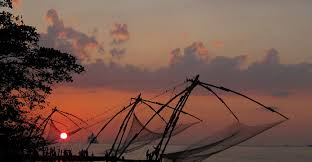

About
Geography

The Highlands slope down from the Western Ghats (also known as the Sahyadri) which rise to an average height of 900m, with a number of peaks well over 1800 m in height.

It is 18650 sq.km in area and accounts for 48 percent of the total land area of Kerala. This is the area of major plantations like tea, coffee, rubber and various spices.

Previous
Next
A blue hour view from Marine Drive, Kochi Chinese fishing nets (Cheena vala) are a type of stationary lift net in India.
Wildlife